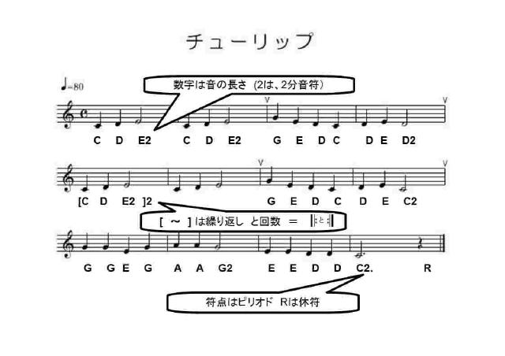
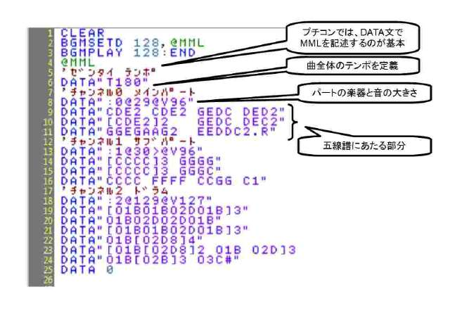

プチコン講座
初心者の方へ
プチコンやプログラムに関して、初心者の方は公式サイトのプチコン初心者講座が一番丁寧でわかりやすいです。 プチコンmkII 初心者講座
ＭＭＬの基礎
プチコンではMMLによって、音楽を打ち込むことができます。
はじめはわかりにくいですが、実際に使ってみると案外単純なことがわかると思います。

要するに、音楽の楽譜をアルファベットで表現したものになっています。
アルファベットで音階、休符はR（ギターのコードを知っていると馴染みやすいかも）、
数字で長さ、2なら二分音符、8なら八分音符。省略した場合は４分音符。
意外と単純であることがわかると思います。
※ 省略時の音符の長さは最初に設定することもできます。
また、MMLでは音楽の楽譜同様の繰り返しを行うことができます。[ と ]
実際にプチコンに打ち込む場合はこのようになります。

プチコンの場合MMLはデータ文で定義するのが一般的になっています。
冒頭の部分で曲全体にかかわるテンポなどを設定し、バンドスコアのパートに当たる部分をチャンネルとして、打ち込んでいきます。
チャンネルでは、チャンネル番号、使う楽器の種類を設定してから、実際のメロディ譜に当たる部分を書いていきます。
実行する際は、データ文からBGMに設定して、その後再生します。

「DTM = デスクトップ ミュージック」という言葉が登場したのは、1988年にRolandが「ミュージくん」を発売した時だったと思います。メルマガ「MAGon」の連載「DTMの原点」では、手元に数多く残る当時のカタログなどを掘り起こしてきました。 本書は、その連載をまとめた第一弾です。当時の機材を思い起こしてもらえれば幸いです。

曲作りの流れとソフト操作の考え方&テクニックが身に付く、DTM入門書の決定版!
「DTMをやってみたいけれど、どこからどう手を付けたらいいか分からない……」といった初心者の方向けのDTM解説本